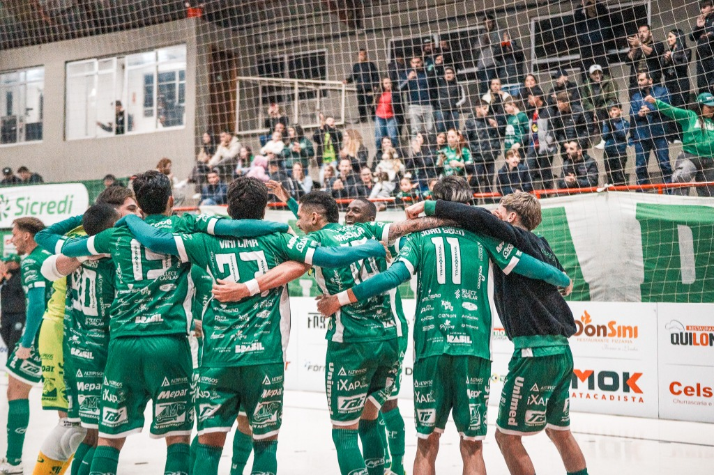

A Chapecoense Futsal abriu a venda de ingressos para o jogo desta sexta-feira (5/6) diante do São Lourenço, às 20h. A partida da sexta rodada da Série Ouro da Federação Catarinense de Futsal ocorrerá no Ginásio Plínio Arlindo De Nes (SER Aurora), em Chapecó, e vale a permanência do Verdão das Quadras na liderança isolada da competição estadual.

Para contar com o apoio massivo da torcida, a Chape Futsal preparou novamente uma estrutura física e digital para a disponibilização dos bilhetes. Os tickets do primeiro lote custam R$ 20,00. Após o término da carga inicial, as entradas passarão a custar R$ 25,00. Pessoas com direito garantido por lei pagam meio-ingresso (R$ 10).
Os torcedores podem adquirir de forma online pelo site ingressojogo.com.br. Quem preferir, pode se dirigir à loja oficial da Chape Futsal (anexa à Classic Uniformes, na rua Paulo Marques, entre as avenidas Fernando Machado e Porto Alegre) ou à loja iXap Sports (na avenida Getúlio Vargas, entre as ruas Paulo Marques e Vitório Cella).

A expectativa é de casa cheia para empurrar o time Prefeitura de Chapecó/Chapecoense/Unochapecó rumo a mais uma vitória no campeonato. A equipe do técnico Leonardo Schroeder lidera com 10 pontos em cinco duelos. O São Lourenço é o quarto colocado, com sete pontos em quatro confrontos.
Crédito das fotos: @rogersilva_fotografia/@achapefutsal